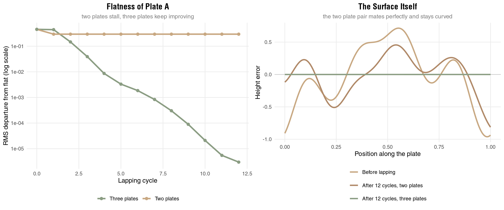
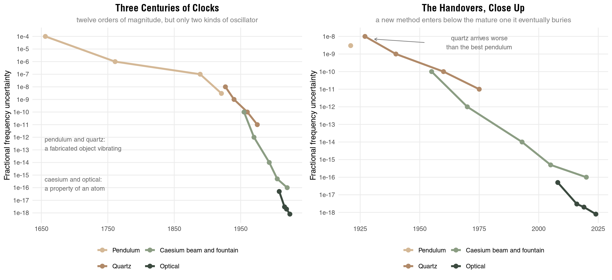
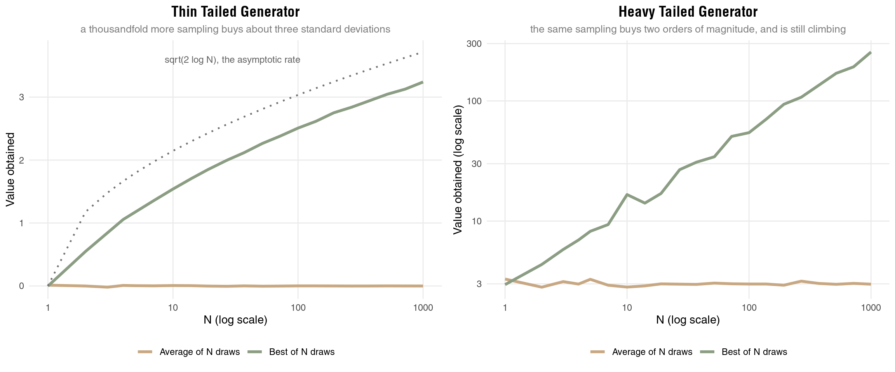
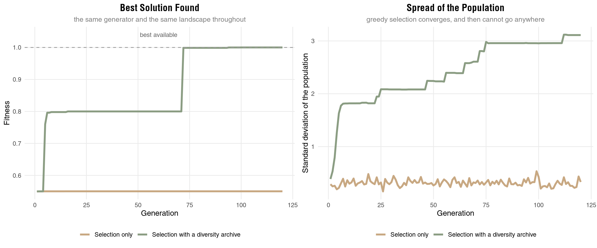

How We Could Build a Ruler Better Than the Best One We Have
Every sensor I have ever worked with came with a calibration certificate, and every certificate points at another instrument. The conductivity cell was checked against a standard seawater sample, the standard seawater was checked against a reference batch, the reference batch was checked at a laboratory whose own instruments were checked somewhere else. The chain is called traceability and it is one of the genuinely beautiful pieces of infrastructure that quietly holds the sciences together. It is also, if you follow it far enough, a chain that has to end.
So the question that kept bothering me is the one at the end of the chain. To know that a ruler is accurate, you compare it against a better ruler. To know that the better ruler is accurate you need a better one still. At some point you reach the best ruler that exists. What tells you it is right? And more practically: if the best ruler in the world is the one we have, how did anyone ever build the next one?
This is a version of a very old problem. Hans Albert called it the Münchhausen trilemma: any attempt to justify a claim ends in one of three unattractive places. You regress forever, you argue in a circle, or you stop somewhere and declare that this point needs no justification. Metrology cannot regress forever, it does not want to be circular, and it is not supposed to be dogmatic. And yet the instruments did get better, century after century. That fact has to be explained, and the explanation turned out to be more useful to me than I expected, because it is not really about rulers.
The workshop answer
Copying does not work. Each copy inherits its parent’s errors and adds its own, so the error of the chain performs a random walk and grows with every generation. Worse, nobody notices, because a copy always agrees with the thing it was copied from. Agreement was the output of the process, not evidence about it.
Averaging works, but only halfway. Make many rulers and average them and the errors that are independent shrink like one over the square root of how many you used. Anything the rulers share, because they came off the same machine on the same day in the same warm room, survives untouched no matter how many you make. Hold on to that sentence, it comes back.
What actually works is stranger. If you want a flat reference surface, grinding one plate against another is useless: they will mate perfectly and both be curved, one convex and one concave, like a lens and its mould. Joseph Whitworth’s answer, in a paper he presented around 1840, was to use three plates and lap them in pairs, A against B, then A against C, then B against C. Now no plate can specialise. The curve that lets A mate with B is the wrong curve for mating with C, and the only shape that mates with two other surfaces that also mate with each other is the plane.
library(ggplot2)
library(gridExtra)
set.seed(123)
n = 200
x = seq(0, 1, length.out = n)
# a plausible starting surface: a few low frequency lumps, the kind of error a
# roughly finished plate actually has
rough = function() {
sin(2 * pi * x * runif(1, 0.7, 1.6) + runif(1, 0, 6)) * runif(1, 0.3, 1.0) +
sin(2 * pi * x * runif(1, 1.5, 3.0) + runif(1, 0, 6)) * runif(1, 0.2, 0.6) +
sin(2 * pi * x * runif(1, 3.0, 5.0) + runif(1, 0, 6)) * runif(1, 0.1, 0.3)
}
# flatness is what is left once the best fit line is removed: a plate that is
# merely wedge shaped is still perfectly flat
flatness = function(p) sqrt(mean(residuals(lm(p ~ x))^2))
# lap two faces together. the gap is p + q, material comes off only where the
# faces actually touch, and both plates give up the same amount
lap = function(p, q) {
cut = (p + q - min(p + q)) / 2
list(p - cut, q - cut)
}
a0 = rough(); b0 = rough(); c0 = rough()
cycles = 12
a = a0; b = b0 # two plates, lapped repeatedly
two = sapply(0:cycles, function(i) {
if (i > 0) { r = lap(a, b); a <<- r[[1]]; b <<- r[[2]] }
flatness(a)
})
two_final = a
a = a0; b = b0; cc = c0 # three plates, lapped in pairs
three = sapply(0:cycles, function(i) {
if (i > 0) {
r = lap(a, b); a <<- r[[1]]; b <<- r[[2]]
r = lap(a, cc); a <<- r[[1]]; cc <<- r[[2]]
r = lap(b, cc); b <<- r[[1]]; cc <<- r[[2]]
}
flatness(a)
})
three_final = a
conv = rbind(data.frame(cycle = 0:cycles, flat = two, method = "Two plates"),
data.frame(cycle = 0:cycles, flat = three, method = "Three plates"))
p1 = ggplot(conv, aes(x = cycle, y = flat, color = method)) +
geom_line(linewidth = 1.2) + geom_point(size = 2) +
scale_y_log10(labels = function(v) format(v, scientific = TRUE)) +
scale_color_manual(values = c("Two plates" = "#C8A882", "Three plates" = "#8B9D83")) +
labs(title = "Flatness of Plate A", subtitle = "two plates stall, three plates keep improving",
x = "Lapping cycle", y = "RMS departure from flat (log scale)", color = NULL) +
theme_minimal() +
theme(plot.title = element_text(size = 14, face = "bold", hjust = 0.5),
plot.subtitle = element_text(size = 10, hjust = 0.5, color = "gray50"),
legend.position = "bottom", panel.grid.minor = element_blank())
prof = rbind(
data.frame(x = x, h = residuals(lm(a0 ~ x)), state = "Before lapping"),
data.frame(x = x, h = residuals(lm(two_final ~ x)), state = "After 12 cycles, two plates"),
data.frame(x = x, h = residuals(lm(three_final ~ x)), state = "After 12 cycles, three plates"))
prof$state = factor(prof$state, levels = unique(prof$state))
p2 = ggplot(prof, aes(x = x, y = h, color = state)) +
geom_hline(yintercept = 0, color = "gray80") +
geom_line(linewidth = 1.1) +
scale_color_manual(values = c("#C8A882", "#B08968", "#8B9D83")) +
labs(title = "The Surface Itself", subtitle = "the two plate pair mates perfectly and stays curved",
x = "Position along the plate", y = "Height error", color = NULL) +
theme_minimal() +
theme(plot.title = element_text(size = 14, face = "bold", hjust = 0.5),
plot.subtitle = element_text(size = 10, hjust = 0.5, color = "gray50"),
legend.position = "bottom", panel.grid.minor = element_blank()) +
guides(color = guide_legend(nrow = 3))
grid.arrange(p1, p2, ncol = 2)
Twelve cycles take the three plate scheme down by five orders of magnitude and it is still falling. The two plate scheme improves for exactly one cycle and then stops dead, because once the pair mates there is nothing left to remove. Both plates are as wrong as they were, and now they agree about it.
The model is idealised, but the logic in it is the logic in the workshop, and it is worth being precise about what happened. The errors did not cancel. What happened is that the set of shapes satisfying all three pairings at once has exactly one member, and the procedure walks into it. The plane was never in any of the plates. It was in the constraint. There is a genuinely satisfying philosophical point here: the regress looked fatal only because we assumed justification has to flow down from something already justified. The three plates justify nothing individually, and the accuracy appears in the system rather than being passed along through it. Otto Neurath’s sailors rebuilding their ship plank by plank at sea, never able to reach dry dock, are usually offered as an image of making do. The machinists showed it is not making do.
The ceiling belongs to the method
Now the part that took me longer to see, and which I think is the more important half.
Notice what the three plate method produces: flatness. Also straightness, roundness, squareness, if you set it up right. Every one of those is a property defined by a symmetry, which is exactly why a consistency argument can pin it down. And notice what it never produces, no matter how many cycles you run. It does not tell you how long a metre is. You can multiply every object in that workshop by 1.7 and every comparison in the procedure comes out identical. Scale is not a symmetry, so no amount of internal consistency reaches it.
That is not a flaw in the method. It is the method’s null space: the set of errors its own checks are structurally unable to see. Every self-calibration scheme has one. And here is the thing I keep circling back to, because it generalises far beyond metal plates: a systematic error is precisely an error that lives in the null space of your checks. That is what makes it systematic rather than random. Which means that when a method plateaus, the plateau is not telling you about the world. It is telling you the shape of that null space. You have extracted everything this method can extract, and what remains is exactly what it was never able to see.
So progress does not come from doing the same thing harder. It comes from changing which property of the world you are exploiting, so that your old blind spot lands somewhere visible.
The compass is the cleanest example I know. A magnetic needle exploits one fact, that the Earth has a magnetic field, and for centuries improving the compass meant improving the needle: better steel, jewelled pivots, liquid damping, and eventually a binnacle full of correctors, Kelvin’s soft iron spheres and the Flinders bar among them, to cancel the ship’s own magnetism. Every one of those was real progress and every one of them stayed inside the same exploited fact. Then hulls started being built of iron and steel, and the ship’s own field became a disturbance that no amount of needle craft could fully compensate. The ceiling was not in the workmanship. It was in the phenomenon.
The escape was not a better needle. Hermann Anschütz-Kaempfe built the first practical gyrocompass in 1906, the Imperial German Navy adopted it in 1908, and Elmer Sperry had a competing version at sea by 1911. A gyrocompass does not care about magnetism at all. It exploits angular momentum and the rotation of the Earth, and it finds true north rather than magnetic north, which the magnetic compass could never do at any level of craftsmanship. Then that method acquired its own ceiling, in bearings and precession and mass, and the escape was again a change of exploited phenomenon: ring laser and fibre optic gyroscopes read rotation off the Sagnac effect, an interference shift between two beams of light travelling opposite ways around a loop, with no moving parts at all. Today the same job is being pushed further with atom interferometry. Four different facts about the world, each taking over when the previous one was exhausted.
Clocks tell the same story with numbers attached.
# approximate fractional frequency uncertainty of the best available clock of
# each era. these are order of magnitude figures gathered from the usual
# histories, not a careful metrological compilation
clocks = data.frame(
year = c(1656, 1761, 1889, 1921,
1927, 1940, 1960, 1975,
1955, 1970, 1993, 2005, 2020,
2008, 2016, 2019, 2024),
unc = c(1e-4, 1e-6, 1e-7, 3e-9,
1e-8, 1e-9, 1e-10, 1e-11,
1e-10, 1e-12, 1e-14, 5e-16, 1e-16,
5e-17, 3e-18, 2e-18, 8e-19),
tech = c(rep("Pendulum", 4), rep("Quartz", 4),
rep("Caesium beam and fountain", 5), rep("Optical", 4)))
clocks$tech = factor(clocks$tech, levels = c("Pendulum", "Quartz",
"Caesium beam and fountain", "Optical"))
era = c("Pendulum" = "#D4B896", "Quartz" = "#B08968",
"Caesium beam and fountain" = "#8B9D83", "Optical" = "#3B4A3F")
base = function(d, brk) ggplot(d, aes(x = year, y = unc, color = tech)) +
geom_line(linewidth = 1.3) + geom_point(size = 2.6) +
scale_y_log10(breaks = 10^-(0:19), labels = function(v) sprintf("1e%d", log10(v))) +
scale_x_continuous(breaks = brk) +
scale_color_manual(values = era) +
labs(x = NULL, y = "Fractional frequency uncertainty", color = NULL) +
theme_minimal() +
theme(plot.title = element_text(size = 14, face = "bold", hjust = 0.5),
plot.subtitle = element_text(size = 10, hjust = 0.5, color = "gray50"),
legend.position = "bottom", panel.grid.minor = element_blank()) +
guides(color = guide_legend(nrow = 2))
p1 = base(clocks, seq(1650, 2050, 100)) +
annotate("text", x = 1655, y = 3e-13, hjust = 0, size = 3.1, color = "gray40",
label = "pendulum and quartz:\na fabricated object vibrating") +
annotate("text", x = 1655, y = 2e-16, hjust = 0, size = 3.1, color = "gray40",
label = "caesium and optical:\na property of an atom") +
labs(title = "Three Centuries of Clocks",
subtitle = "twelve orders of magnitude, but only two kinds of oscillator")
p2 = base(subset(clocks, year >= 1900), seq(1900, 2040, 25)) +
annotate("segment", x = 1952, xend = 1931, y = 4.5e-9, yend = 7e-9,
color = "gray45", linewidth = 0.4,
arrow = grid::arrow(length = grid::unit(0.15, "cm"))) +
annotate("text", x = 1975, y = 4.5e-9, size = 3.1, color = "gray40",
label = "quartz arrives worse\nthan the best pendulum") +
labs(title = "The Handovers, Close Up",
subtitle = "a new method enters below the mature one it eventually buries")
grid.arrange(p1, p2, ncol = 2)
Each segment is a phenomenon being exhausted, and each one flattens out. And look at the overlaps, because they are the part people forget. When quartz arrived in 1927 it was not obviously better than the free pendulum clocks that were then the best in the world. The new method usually enters below the mature old one and wins later. The same was true of the early gyrocompasses, which were awkward and needed correction tables while the magnetic compass was a settled, elegant instrument.
The first two segments deserve a closer look, though, because they are far less different from each other than the chart makes them appear. A pendulum is a lump of metal swinging under gravity, a quartz resonator is a wafer of crystal flexing under its own elasticity, and both are the same kind of thing: a manufactured object whose frequency is set by its dimensions and by the elastic properties of the material it was cut from. Going from one to the other bought a great deal, mostly by making the oscillator small and fast and sealing it where nothing could touch it. It did not change the family of problems at all. Both drift when the temperature moves. Both have to be individually rated, because no two specimens are alike. Both age, and the mechanism of quartz aging is my favourite detail in this entire story: a five megahertz plate is roughly a million atomic layers thick, and adsorbing or desorbing a single atomic layer of contamination shifts its frequency by about one part per million. The number you are measuring time with is hostage to what has settled on a surface.
The quality factor makes the point numerically. Q is roughly how many oscillations the thing completes before its energy dies away, and it is the figure of merit that decides how finely you can split a tick. A good pendulum swinging in vacuum reaches about \(10^5\). A precision quartz resonator sits in broadly the same territory, better by an order of magnitude or so. The line Q of a caesium fountain is around \(10^{10}\), and optical clocks are past \(10^{15}\). Three centuries of refining a vibrating object, then four or five orders of magnitude of Q in a single step, because that step was not a refinement of anything. It stopped asking a fabricated object how long a second is.
This is also the honest reading of the 1983 redefinition of the metre. Fixing the speed of light by decree and defining the metre as the distance light travels in 1/299792458 of a second looks like a linguistic manoeuvre. What it actually did was move the unit out of the null space. As long as the metre was a bar in a vault, your accuracy was capped by that bar, and the bar could drift with no one able to say so, because if the prototype changes then by definition it does not and everything else in the universe changes instead. Tie the unit to a phenomenon and the ceiling disappears: improving your realisation of the metre stops meaning getting access to the artifact and starts meaning building a better interferometer. The 2019 revision did the same to the rest of the SI. And underneath all of it sits the fact that nature ships with an inexhaustible supply of identical objects. Every caesium 133 atom has the same hyperfine splitting as every other, not because anyone made them carefully but because they are indistinguishable in the strict quantum mechanical sense. There is no manufacturing tolerance in an atom. We did not build the best ruler. We found it.
Or you combine two ceilings
Changing the exploited phenomenon is the dramatic move. It is not the only one, and it is not even the common one. The quieter move is to combine two methods whose ceilings sit in different places, and that turns out to be how most real instruments actually work.
Go back to the clock chart, because it hides something. I described quartz as a dead end, a fabricated object that ages and drifts and was superseded by the atom. That is true, and it is not what happened to quartz. Every caesium standard has a quartz oscillator inside it. The atom cannot run a clock by itself: something has to generate the interrogating signal and something has to count, and all the atomic transition ever tells you is whether the signal you brought it was slightly high or slightly low. So the architecture is a quartz oscillator doing the actual oscillating, with the caesium resonance steering it through a control loop that applies a correction and applies it again.
That pairing is strictly better than either half, and the reason is that their weaknesses are in different places. A quartz oscillator is superb over a second and drifts badly over a week. The atomic reference never drifts at all and is noisy shot to shot. Combine them and you take the short times from the quartz and the long times from the atom, and you beat both of them everywhere. Quartz was not superseded. It was demoted to flywheel, which is a much better job than it sounds.
The optical clocks needed a combination too, and a harder one. An optical transition oscillates at hundreds of terahertz and no electronics can count that. For decades the only way to measure an optical frequency against the caesium standard was a harmonic frequency chain, a room full of lasers and multipliers assembled to bridge one specific frequency, laborious enough that only a handful of laboratories in the world could do it at all. The optical frequency comb, developed by Theodor Hänsch and John Hall around the turn of the century and recognised with the 2005 Nobel Prize, collapsed that room into a single mode locked laser whose output is a ruler in frequency space with a few hundred thousand evenly spaced teeth. Lock the tooth spacing to a microwave standard and an optical frequency can be read straight off it. The comb measures nothing on its own. It is purely a bridge, and without it an optical clock would be an exquisitely precise device with nothing to compare itself to, which is the same as not having one.
And here is the condition on all of it, which is the same condition as everywhere else in this post. Combining helps exactly to the degree that the two methods have different null spaces. Quartz and caesium fail in different regimes, so pairing them covers both. Two quartz oscillators from the same batch fail the same way, so pairing them buys you a factor of the square root of two and nothing structural at all. Combine two methods that share a blind spot and you have rebuilt the two plate procedure: perfect agreement, identical error, no information. The redefined kilogram is the disciplined version of the idea, realised by two routes that share almost no systematics, a Kibble balance weighing mass against electrical quantities and a sphere of isotopically pure silicon with its atoms counted, and the whole arrangement is kept honest by making them agree.
Why the plateau is lawful
I want to be careful here, because “methods plateau” could be just a shrug. It is not. For the averaging case, at least, the plateau is a theorem.
Take a measurement N times and average. The random part of the error falls like one over the square root of N, and that rate is not a fact about your instrument or about the world. It is a fact about addition. It is the central limit theorem, and buying a hundredfold improvement costs ten thousand times the effort, at which point everyone stops and calls it the limit of the technique.
But the deeper cost of averaging is not the exchange rate, it is what averaging does to the shape of the distribution. Aggregate many independent contributions and you get a normal, whatever you started with. Normals have no tails worth having. So the operation that removes your noise is the same operation that destroys your outliers, and it does not know the difference between them. I wrote a whole post about when power laws collapse into normals and ended it on the tension between processes that amplify and processes that average away. This is that tension again, with a practical edge on it: if the thing you are looking for lives in the tail, averaging is not a weak tool, it is the wrong tool, and more of it makes things worse.
The alternative operation is selection. Instead of the average of N draws, take the best of N. Same generator, same samples, completely different aggregation.
set.seed(123)
reps = 3000
Ns = unique(round(10^seq(0, 3, length.out = 22)))
draw_norm = function(n) rnorm(n) # thin tail
draw_pow = function(n) (1 - runif(n))^(-1 / 1.5) # power law, alpha = 1.5
curve_for = function(drawer) do.call(rbind, lapply(Ns, function(N)
data.frame(N = N,
value = c(mean(replicate(reps, mean(drawer(N)))),
mean(replicate(reps, max(drawer(N))))),
rule = c("Average of N draws", "Best of N draws"))))
thin = curve_for(draw_norm)
heavy = curve_for(draw_pow)
p1 = ggplot(thin, aes(x = N, y = value, color = rule)) +
geom_line(linewidth = 1.3) +
geom_line(data = data.frame(N = Ns, value = sqrt(2 * log(Ns)), rule = "Average of N draws"),
linetype = "dotted", color = "gray45", linewidth = 0.8) +
annotate("text", x = 30, y = 3.6, label = "sqrt(2 log N), the asymptotic rate", size = 3.2, color = "gray40") +
scale_x_log10() +
scale_color_manual(values = c("Average of N draws" = "#C8A882", "Best of N draws" = "#8B9D83")) +
labs(title = "Thin Tailed Generator",
subtitle = "a thousandfold more sampling buys about three standard deviations",
x = "N (log scale)", y = "Value obtained", color = NULL) +
theme_minimal() +
theme(plot.title = element_text(size = 14, face = "bold", hjust = 0.5),
plot.subtitle = element_text(size = 10, hjust = 0.5, color = "gray50"),
legend.position = "bottom", panel.grid.minor = element_blank())
p2 = ggplot(heavy, aes(x = N, y = value, color = rule)) +
geom_line(linewidth = 1.3) +
scale_x_log10() + scale_y_log10() +
scale_color_manual(values = c("Average of N draws" = "#C8A882", "Best of N draws" = "#8B9D83")) +
labs(title = "Heavy Tailed Generator",
subtitle = "the same sampling buys two orders of magnitude, and is still climbing",
x = "N (log scale)", y = "Value obtained (log scale)", color = NULL) +
theme_minimal() +
theme(plot.title = element_text(size = 14, face = "bold", hjust = 0.5),
plot.subtitle = element_text(size = 10, hjust = 0.5, color = "gray50"),
legend.position = "bottom", panel.grid.minor = element_blank())
grid.arrange(p1, p2, ncol = 2)
The averaging line is flat in both panels. It is supposed to be: that is what an estimate of the mean does, it converges to the mean. The selection line is the interesting one, and its behaviour depends entirely on the tail of what you are drawing from. For a thin tailed generator the best of N grows like the square root of the logarithm of N, which is close to insulting: a thousand times the compute for about three standard deviations, and the next three would cost you the age of the universe. For a heavy tailed generator, the best of N grows like a power of N and keeps paying out.
So whether search is worth doing is not a question about how clever your search is. It is a question about the tail of the thing you are sampling from. And this is the same statement as the compass, in different clothing: your returns flatten because of a structural property of the method you chose, and the way out is to change the property, not to push harder on the same one.
The same argument, aimed at language models
Here is where I actually wanted to get to.
I heard someone claim on a podcast that as language models improve, their output converges on something like the average of everything they were trained on, so the end state of all this is beautifully fluent mediocrity. The Common Crawl framing makes it vivid and it is not a rhetorical exaggeration: filtered Common Crawl was about sixty percent of GPT-3’s training mix by weight, so “the average of Common Crawl” is roughly the right picture of what the bulk of the corpus is.
I could not find who said it first, and I suspect it has been arrived at independently many times. The clearest early articulation in another medium is Ted Chiang’s ChatGPT Is a Blurry JPEG of the Web in the New Yorker, 9 February 2023, though his argument is about lossy compression rather than averaging, which is a different mechanism with a similar smell. The statistical ancestor is older and more exact: Francis Galton’s regression toward mediocrity, from 1886, and a 2025 preprint on advertising creativity revives that name directly, arguing that model output regresses to the mean of its training distribution.
Now, the honest version. A language model does not literally compute the mean of its corpus. It fits a conditional distribution and samples from it, and calling that averaging is a metaphor. But the metaphor points at something real, because the pipeline contains several stages that each concentrate probability mass toward the centre: maximum likelihood training fits the bulk of the distribution and spends very little capacity on the tails, low temperature and mode seeking decoding sample near the peak rather than from the whole distribution, and preference tuning pulls further toward whatever the median rater approved of. Compose those and you get an operation that behaves like averaging even though no mean is ever computed.
The evidence is not just vibes at this point. Doshi and Hauser, in Science Advances in 2024, found that writers given AI story ideas produced individually more creative stories that were collectively about ten percent more similar to each other, which is precisely the averaging signature: variance down, mean up. A 2025 PNAS paper, Echoes in AI, measured plot elements repeating across independently generated stories, with human written plots rarely echoing that way. And the iterated version is the sharpest of all: Shumailov and colleagues, in Nature in 2024, showed that training a model recursively on its own output loses the tails of the distribution first and eventually converges to a point estimate with almost no variance. That is the copy chain from the beginning of this post, except that instead of the error growing, the variance dies.
What selection changes, and what it does not
Then the evolutionary systems arrived and complicated the story in a way I find genuinely clarifying.
FunSearch, AlphaEvolve, ShinkaEvolve and the rest do not ask the model once. They generate a population, evaluate it, keep what scores well, mutate, and repeat. ShinkaEvolve reached a state of the art circle packing configuration in roughly 150 evaluations. The model that produced the winning program is the same model that would have handed you something forgettable if you had simply asked it once.
That is the mean of N versus the best of N, with real money on it. Selection keeps the outlier and discards the middle, which is the exact opposite of the operation that everyone is worried about. So the claim needs narrowing: what regresses to the mean is one particular way of drawing from the model, not the model. The tail is still in there. Single shot chat is an averaging aggregation over a generator whose tails are intact, and evolutionary search is a selection aggregation over the same generator. The distinction is in the aggregation, not the machine, which is exactly the difference between the two plate and the three plate procedure using identical iron.
That is also, I think, the real reason these systems work, and I underplayed it a moment ago by talking only about selection. FunSearch and its descendants are not one method, they are two bolted together. A language model is a generator with an enormous null space, since it has no way of knowing whether the program it just wrote is correct. An evaluator that runs the code has its null space somewhere else entirely, since execution settles correctness exactly and invents nothing whatsoever. Neither half is worth much alone: the generator gives you plausible programs, the evaluator gives you a verdict and no candidates. The pairing works because their blind spots barely overlap, which is the quartz and caesium arrangement in different clothes.
It also explains why ensembling several language models does so much less than you would hope. They are trained on overlapping corpora with similar objectives and similar architectures, so their errors are correlated and their null spaces largely coincide. The PNAS study I mentioned found the same idiosyncratic plot elements echoing not only across one model’s outputs but across different models, which is about as direct a measurement of a shared blind spot as you could ask for. Averaging correlated instruments is the thing that does not work, and it did not start working because the instruments got large.
But this is where the compass comes back, and it is the part I would not want to leave out.
Selection escapes averaging. It does not escape the ceiling. An evolutionary run inside a fixed search space, a fixed fitness function, a fixed prompt scaffold and a fixed hyperparameter setting is still a method, with its own null space, and iterating it in the same environment concentrates the population just as surely as averaging concentrated the samples. Everything alive shares a recent ancestor, diversity collapses, and you are averaging again, around a better point.
set.seed(123)
# a fixed, rugged landscape: a poor peak where the population starts, a broad
# mediocre one, and a narrow excellent one further out
fitness = function(x)
0.55 * exp(-(x - 1.5)^2 / 0.6) +
0.80 * exp(-(x - 5.5)^2 / 2.0) +
1.00 * exp(-(x - 9.5)^2 / 0.35)
P = 24; gens = 120; sigma = 0.45
# plain elitist selection: keep the best half, breed from them. nothing in the
# scheme rewards being different
run_greedy = function() {
pop = rnorm(P, 1.5, 0.3)
do.call(rbind, lapply(1:gens, function(g) {
keep = pop[order(fitness(pop), decreasing = TRUE)][1:(P / 2)]
row = data.frame(gen = g, best = max(fitness(pop)), spread = sd(pop))
pop <<- c(keep, sample(keep, P / 2, TRUE) + rnorm(P / 2, 0, sigma))
row
}))
}
# a diversity archive: carve the space into niches and keep the best of each,
# so a mediocre individual survives if nothing else occupies its niche
run_qd = function(bins = seq(0, 12, by = 0.6)) {
arch = rep(NA_real_, length(bins) - 1)
place = function(x) {
i = findInterval(x, bins)
if (i >= 1 && i < length(bins) &&
(is.na(arch[i]) || fitness(x) > fitness(arch[i]))) arch[i] <<- x
}
for (x0 in rnorm(P, 1.5, 0.3)) place(x0)
do.call(rbind, lapply(1:gens, function(g) {
live = arch[!is.na(arch)]
row = data.frame(gen = g, best = max(fitness(live)), spread = sd(live))
for (i in 1:(P / 2)) place(sample(live, 1) + rnorm(1, 0, sigma))
row
}))
}
a = run_greedy(); a$scheme = "Selection only"
b = run_qd(); b$scheme = "Selection with a diversity archive"
res = rbind(a, b)
p1 = ggplot(res, aes(x = gen, y = best, color = scheme)) +
geom_line(linewidth = 1.3) +
geom_hline(yintercept = 1.0, linetype = "dashed", color = "gray60") +
annotate("text", x = 60, y = 1.04, label = "best available", size = 3.2, color = "gray40") +
scale_color_manual(values = c("Selection only" = "#C8A882",
"Selection with a diversity archive" = "#8B9D83")) +
labs(title = "Best Solution Found", subtitle = "the same generator and the same landscape throughout",
x = "Generation", y = "Fitness", color = NULL) +
theme_minimal() +
theme(plot.title = element_text(size = 14, face = "bold", hjust = 0.5),
plot.subtitle = element_text(size = 10, hjust = 0.5, color = "gray50"),
legend.position = "bottom", panel.grid.minor = element_blank())
p2 = ggplot(res, aes(x = gen, y = spread, color = scheme)) +
geom_line(linewidth = 1.3) +
scale_color_manual(values = c("Selection only" = "#C8A882",
"Selection with a diversity archive" = "#8B9D83")) +
labs(title = "Spread of the Population", subtitle = "greedy selection converges, and then cannot go anywhere",
x = "Generation", y = "Standard deviation of the population", color = NULL) +
theme_minimal() +
theme(plot.title = element_text(size = 14, face = "bold", hjust = 0.5),
plot.subtitle = element_text(size = 10, hjust = 0.5, color = "gray50"),
legend.position = "bottom", panel.grid.minor = element_blank())
grid.arrange(p1, p2, ncol = 2)
Greedy selection climbs the hill it started on, reaches 0.55 out of an available 1.0, and sits there for all hundred and twenty generations. Its population never spreads: it starts clustered and stays clustered, which is the diagnosis, because there is nothing left to select between. The version that keeps an archive of niches, so that a mediocre individual survives if it is the only occupant of its region, crosses the valleys and eventually finds the real peak.
Watch what that second run does in between, though, because it is the whole argument in miniature. For the first four generations it is no better off than the greedy one. It crosses to the middle peak at generation five, and then it parks on 0.80 for about sixty generations, which by fitness alone is indistinguishable from having converged. The only thing improving over that whole stretch is the spread of the population, which is not the axis anybody would be watching. Then at generation seventy two it finds the real peak. The apparently wasted middle of that run is the part that paid.
This is not a hypothetical concern in the field. Premature convergence is the oldest problem in evolutionary computation, and the newer systems spend real engineering on it: island populations, novelty search, quality diversity archives, and in ShinkaEvolve’s case an explicit novelty based rejection step that refuses to evaluate a candidate too similar to one already tried. All of that machinery exists for one reason, which is to stop selection from turning back into averaging.
And the ceiling above all of that is whatever the pair is jointly blind to, which is not a mystery once you ask the question this way. The evaluator can only settle what can be formalised into a score, so anything unscoreable is invisible to both halves no matter how long you run them. The fitness function itself does not move at all. That is where I ended up in the metric trap post, arguing that a fixed evaluator is the binding constraint on these systems, and I did not have this framing for it then. The fixed metric is the magnetic needle. You can polish it, compensate it, mount it better, and it will keep working beautifully, and none of that changes the fact that one day the hull will be made of iron.
What I take from it
Three stories, one shape.
A method exploits some property of the world, and improving the method fills in everything that property can reach. What is left over is not distributed randomly, it is exactly the set of errors the method’s own checks cannot see, and that set is what you hit when you plateau. So a plateau is never news about the limits of what can be known. It is a portrait of your blind spot, drawn at the highest resolution you can currently manage. This is close to what I was circling in we solve with a given tool’s vision, except that back then I thought of it as a bias to be resisted, and I now think it is more like a structural feature to be used, because knowing that the ceiling belongs to the method tells you what kind of thing to go looking for.
There are two ways out, and the undramatic one is the more common. You can pair your method with a second one that fails somewhere else, which is what a caesium standard is doing to a quartz crystal and what a code evaluator is doing to a language model, and the pairing is worth exactly as much as the difference between the two blind spots. Or you go looking for a different property to exploit, and the awkward part there is that you cannot know in advance which one, and that it will almost certainly look worse than what you have. Anschütz-Kaempfe was not building a better compass, he was answering a different question with a spinning mass. The three plates were not a better plate. Quartz was not a better pendulum. If somebody hands you an approach that is currently inferior to the mature method but limited by a different phenomenon, that is not a weaker version of what you have, it is the only kind of thing that has ever raised the ceiling.
And on the language model question, I think the averaging claim is right about the operation and wrong about the machine. Ask once and you get something near the middle, for reasons that are about the shape of the sampling and not about a limit on what the model contains. Select instead of average and the tail is available, which is why a program search finds things no single answer would. But run that search long enough in one fixed environment and it will find its own local maximum and sit on it, at which point somebody will announce that the technique has reached its limit. They will be right, and they will mean less than it sounds. The limit is in the method. It always was.
Sources
- Chiang, T. “ChatGPT Is a Blurry JPEG of the Web.” The New Yorker, 9 February 2023.
- Doshi, A.R. & Hauser, O.P. “Generative AI enhances individual creativity but reduces the collective diversity of novel content.” Science Advances 10, eadn5290 (2024).
- Xu, W. et al. “Echoes in AI: Quantifying lack of plot diversity in LLM outputs.” PNAS 122(35), e2504966122 (2025).
- Shumailov, I. et al. “AI models collapse when trained on recursively generated data.” Nature 631, 755-759 (2024).
- Keon, M. et al. “Galton’s Law of Mediocrity: Why Large Language Models Regress to the Mean and Fail at Creativity in Advertising.” arXiv: 2509.25767 (2025).
- Lange, R.T. et al. “ShinkaEvolve: Towards Open-Ended and Sample-Efficient Program Evolution.” arXiv: 2509.19349 (2025).
- Brown, T.B. et al. “Language Models are Few-Shot Learners.” NeurIPS (2020), for the Common Crawl share of the GPT-3 training mix.
- Whitworth, J. “A Paper on Plane Metallic Surfaces or True Planes,” read to the British Association at Glasgow, 1840, for the three plate method.
- The Nobel Prize in Physics 2005, awarded in part to Hänsch and Hall for the optical frequency comb technique.
- BIPM, Mise en pratique for the definition of the kilogram, for the Kibble balance and X-ray crystal density realisations.